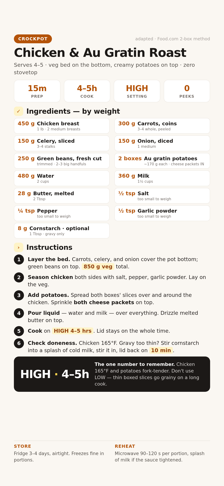

Roast-night comfort without the roast: chicken over a carrot-celery-onion bed, two boxes of au gratin potatoes cooking into a cheese gravy on top. Serves 4–5 from one crockpot.

📱 For your phone — tap to open the full-size card, then save it to Photos.
For 4–5 servings. Grams lead; volume in the small line.
Weigh if you can. Set the bowl on the scale, tare between ingredients, go by grams.
Spread the 300 g carrot coins, 150 g celery, 150 g onion, and 250 g green beans evenly over the bottom of the crockpot.
What to expect: a solid veg layer covering the ceramic — about 850 g total. This is the roast flavor base and it keeps the chicken off the hot bottom.
Want snappier beans? On a 4–5 hr cook green beans go fully soft (think creamed style). If you prefer some bite, hold them back and stir them in for the last 45–60 min — they'll still take on the sauce.
Shake ½ tsp salt, ¼ tsp pepper, and ½ tsp garlic powder over both sides of the 450 g chicken breast, then lay it on the veg bed.
What to expect: the chicken sits on top of the vegetables, not in liquid. Liquid comes later.
Spread both boxes of dry potato slices over and around the chicken. Sprinkle both cheese packets evenly over the top.
Don't skip the packets. They're the entire sauce. A box without its cheese packet makes a bland pot of potatoes.
Pour 480 g (2 cups) water and 360 g (1½ cups) milk evenly over everything, then drizzle the melted 28 g butter on top.
What to expect: liquid visible around the edges but the top potatoes sitting mostly dry. That's right — they'll steam down into the sauce.
Cover and cook on HIGH for 4–5 hrs. No peeking — every lid lift adds ~20 min of cook time.
Don't use LOW. Thin boxed potato slices go grainy and fall apart on an 8-hr low cook. If you must run LOW, check at 7 hrs.
What to expect at 4 hrs: bubbling at the edges, the whole top sauce-y. Start checking at 4 hrs.
Chicken must read 165°F in the thickest part and the potatoes should slide off a fork. Both hit together — the pot is done.
Not there yet? Lid back on, check again in 30 min. Crockpot HIGH runs hot or mild depending on the model.
Sauce too thin? Shake 8 g (1 Tbsp) cornstarch into a splash of cold milk, stir it in, lid back on for 10 min. Done as-is, the cheese-packet sauce is already spoon-over-able.
Shred or slice the chicken, give the pot one gentle stir, and scoop. Leftovers go in the fridge airtight for 3–4 days; reheat a portion 90–120 s in the microwave with a splash of milk if the sauce tightened overnight.
Slices clumped above the liquid instead of sinking in. Stir the pot, lid back on, give it another 30–45 min on HIGH.
The pot ran too hot. Next time add the milk in the last hour, water from the start. A hard stir at the end usually pulls it back together.
It cooked past 165°F by an hour or more. Next time start checking at 4 hrs; or lay the chicken on the veg instead of under the potatoes so it steams, not boils.
Seasoning was too shy for 600 g of veg plus potatoes. Bump the salt to 1 tsp, and remember the cheese packets carry most of the flavor — both in, every time.
That's a full 4–5 hr cook — expected, creamed-casserole style. For bite, add beans in the last 45–60 min next time.